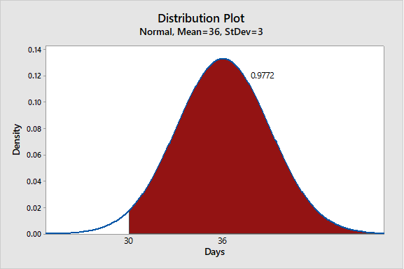
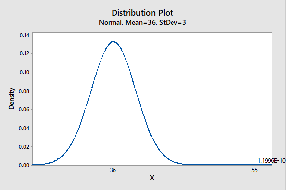
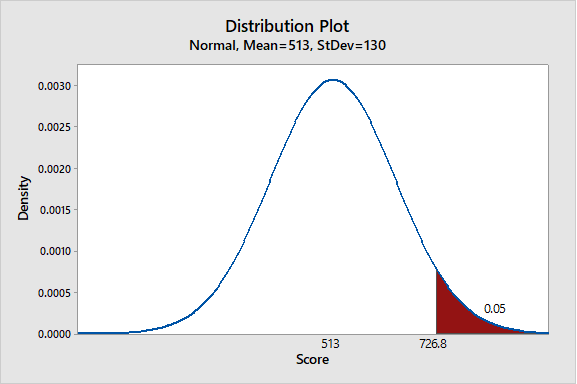
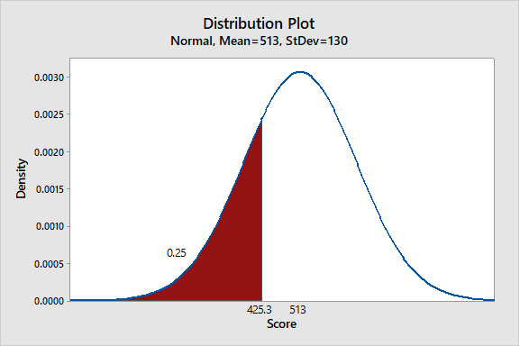
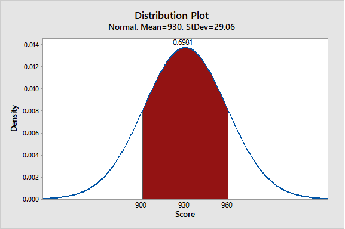
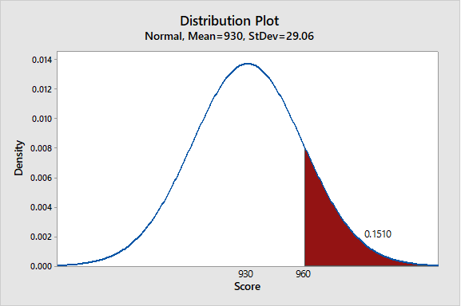
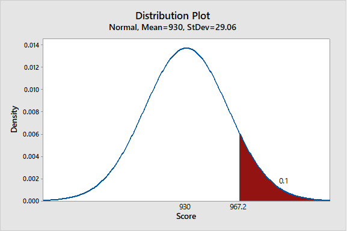
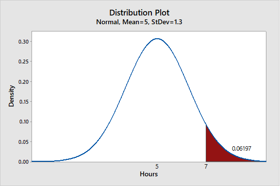
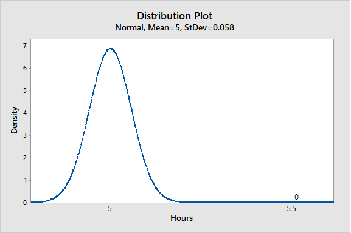

4 Homework 3
4.1 Problem 4.69 - Travel Voucher Processing
4.1.1 P(x > 30)
\[P(x > 30) = P (z > \frac{30 - 36}{3})\]
P(x > 30) = P(z > -2) = 0.98

4.1.2 P(x > 55)
\[P(x > 55) = P (z >\frac{55 - 36}{3})\]
P(x > 55) = P(z > 6.333) = 0

Since the probability is extremly low, the conclusion is that the travel voucher was misplaced or lost.
4.2 Problem 4.72 - Honor Society
4.2.1 P(z > 1.65) = 0.95
\[1.65 = \frac{X - 513}{130}\]
P(z > 0.05) = 726.8
X = 727.5

4.2.2 P(z < 0.675 ) = 0.25
\[ -0.675 = \frac{X - 513}{130}\]
P(z < 0.25) = 425.3
X = 425.25

4.3 Problem 4.79 - Retardation Score
4.3.1 P(900 > x > 960)
P(900 > x > 960) =

4.3.2 P(x > 960)
\[P(x > 960) = P (z >\frac{960 - 930}{20})\]
P(x > 960) = 0.2

4.3.3 P(z > 1.28)
P(x > 960) = 967.3

4.4 Problem 4.82 TV Watching Time
The results are not consistent.
4.4.1 P(x > 7)
\[P(x > 5.5) = P (z > \frac{7 - 5}{1.3})\] P(x > 5.5) = P(z > 0.385)
P(x > 7) = 0.1

4.4.2 P(x > 5.5)
P(x > 5.5) = P(z > 8.6)
P(x > 5.5) = 0
